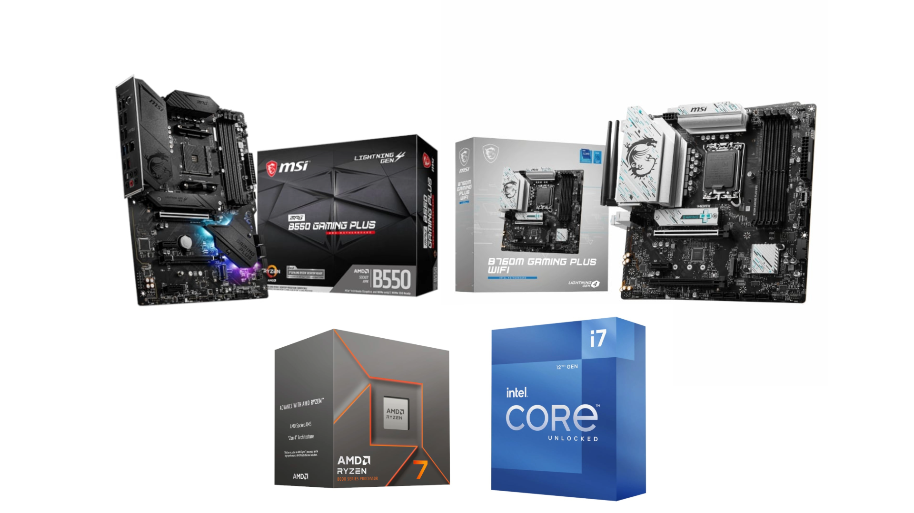
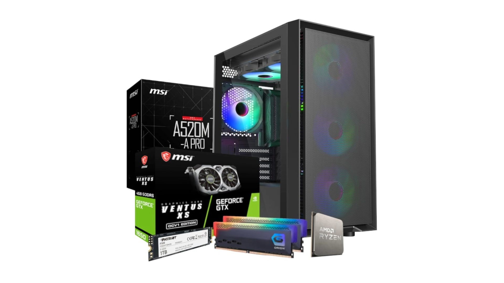

Our Services
Discover the wide range of services we offer to meet your needs.

Component Sales
Computer components are the building blocks of any computer system, working together to perform various tasks and operations.
Read more
Laptop Repairs
Laptop repairs require a delicate balance of technical expertise and precision to restore your device to its optimal functionality.
Read more

Computer Repairs and Builds
Computer repairs and builds require a delicate balance of technical expertise and precision to repair your damaged computer or build the system of your dreams.
Read more